.jpg)
.jpg)
tipos de dinosaurios
Los dinosaurios se clasifican de acuerdo a la estructura de su cadera:
Saurisquios
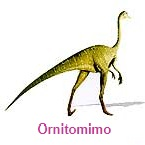
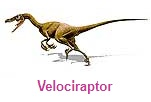
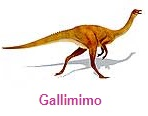
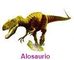
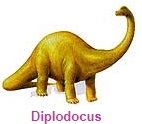
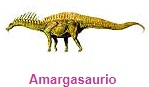
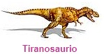
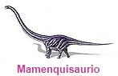
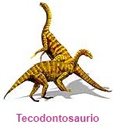
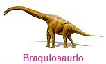
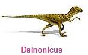
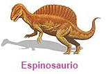
Ornitrisquios
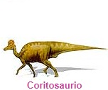
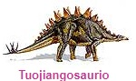
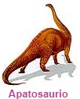
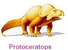
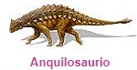
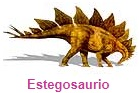
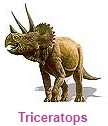
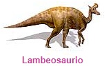
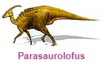
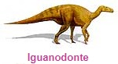
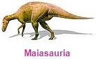
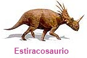
Arqueopterix
Especie: Archaeopterix Lithographica
Su nombre significa Ala Antigua. Esta ave primitiva vivió en el periodo Jurásico. Era un dinosaurio carnívoro. Su dieta probablemente incluía pequeños reptiles, mamíferos e insectos. Medía aproximadamente 60 centímetros y pesaba 500 gramos. Se le considera la primera ave. Es uno de los fósiles más importantes, porque aporta evidencias que apoyan la teoría de que las aves evolucionaron a partir de un antepasado que era dinosaurio. Los esqueletos fósiles de esta especie muestran que no eran tan buenos voladores como las aves actuales. Hasta la fecha se han encontrado ocho ejemplares en el sur de Alemania.
indice
Especie: Ornithomimus Velox
Su nombre significa Rápido Imitador de Aves. Vivió durante el periodo Cretácico tardío. Esta especie era omnívora. Se alimentaba de plantas, insectos y hasta huevos de otros dinosaurios. Medía tres metros de largo y pesaba hasta 150 kilogramos. Se le asignó este nombre por su gran parecido a las aves modernas, como la avestruz. Sus restos fósiles han sido encontrados en Colorado y Montana, Estados Unidos, y Alberta, Canadá.
indice
Especie: Velociraptor Mongoliensis
Su nombre significa Rápido Cazador de Mongolia. Vivió durante el periodo Cretácico tardío. Medía hasta 1.8 metros de longitud y pesaba 15 kilogramos. Era carnívoro. Se cree que su presa favorita era el Protoceratops. Tenía el tamaño de un lobo actual y probablemente cazaba en grupo, lo que le permitía matar presas mucho más grandes que él. Al igual que Deinonicus, tenía una poderosa garra en sus patas, con la que hería de muerte a sus presas. Sus fósiles han sido encontrados en Mongolia y China.
indice
Especie: Gallimimus Bullatus
Su nombre significa Reptil Gallina. Vivió durante el periodo Cretácico tardío. Medía cuatro metros y pesaba un poco más de cuatro toneladas. Era omnívoro y su dieta consistía de pequeños animales, insectos, huevos y plantas que obtenía después de colar el lodo con sus dientes tipo peine. Este ágil dinosaurio caminaba en dos delgadas patas. Probablemente corría tan rápido como el avestruz, que alcanza una velocidad de hasta 70 kilómetros por hora. Se han encontrado restos fósiles en el desierto de Gobi y Mongolia.
indice
Especie: Allosaurus Fragilis
Su nombre significa Delicado Reptil Extraño. Este carnívoro vivió en el periodo Jurásico tardío. Medía aproximadamente 12 metros de largo y pesaba hasta dos toneladas. Se alimentaba de pequeños dinosaurios como el Camptosaurio y el Estegosaurio, además de lagartos y mamíferos. Se caracteriza por las protuberancias que tiene delante de cada ojo. Hasta la fecha no se sabe con exactitud cuál era la función de éstas. Es uno de los dinosaurios de los que se tiene mayor información, sobre todo en lo que se refiere a su anatomía, aspecto y forma de vida. Se han encontrado restos fósiles en el oeste de Estados Unidos, Portugal y Australia.
indice
Especie: Diplodocus Longus
Su nombre significa Viga Doble. Vivió durante el periodo Jurásico tardío. La dieta de este herbívoro pudo haber incluido hojas y frutos de árboles altos y arbustos, así como helechos y equisetos que crecían a nivel del suelo. Medía hasta 27 metros de largo y se calcula que pesaba 20 toneladas. Los dientes de este dinosaurio se localizaban en la zona delantera de la mandíbula. Tenían forma de lápiz y estaban alineados de manera similar a los dientes de un peine. Diversos estudios sugieren que el Diplodocus no podía mantener su cuello levantado por mucho tiempo. El extremo de su cola era muy delgado, lo que le permitía usarla como un látigo para defenderse de sus depredadores. Se han encontrado restos fósiles un Utah, Colorado y Wyoming, Estados Unidos.
indice
Especie: Amargasaurus Cazaui
Su nombre significa Reptil de la Amarga, nombre de una provincia argentina. Vivió a principios del periodo Cretácico. Se alimentaba de plantas, probablemente coníferas, que eran las que predominaban en ese tiempo. Medía hasta 10 metros de longitud y pesaba aproximadamente cinco toneladas. Vivía en manadas, las cuales emigraban cuando escaseaba el alimento. Se cree que sus espinas las utilizaba para defenderse o durante el cortejo.
indice
Especie: Tyrannosaurus Rex
Su nombre significa Reptil Tirano. Vivió durante el periodo Cretácico tardío. Medía de 10 a 14 metros de longitud y pesaba entre cuatro y siete toneladas. Era uno de los carnívoros más feroces. Algunos huesos fósiles de Edmontosaurio y Triceratops muestran marcas de los dientes de este depredador. Las manos de Tiranosaurio eran tan cortas que no le servían para llevarse la comida al hocico. Se han encontrado fósiles en el oeste de América del Norte. Durante casi cien años se le consideró el carnívoro más grande, pero en América del Sur y África se han descubierto ejemplares de mayor tamaño, por ejemplo el Gigantosaurio.
indice
Especie: Mamenchisaurus Hochuanensis
Su nombre significa Lagarto de Hochuan y Mamenchi. Vivió durante el periodo Jurásico tardío. Era herbívoro y se alimentaba del follaje de los árboles. Medía 25 metros de largo y pesaba 27 toneladas. Hasta ahora no se ha hallado un esqueleto fósil completo, pero sí gran parte de él, lo que ha permitido conocer cómo era. Al parecer viajaba en manadas, posiblemente cuando su alimento escaseaba. Sus restos fósiles se han encontrado en China.
indice
Especie: Thecodontosaurus Antiquus
Su nombre significa Lagarto Antiguo con Dientes Pequeños. Vivió durante el periodo Triásico tardío. Medía aproximadamente tres metros de largo. Tenía cuatro dedos en las patas traseras y cinco en las delanteras. Es el prosaurópodo más antiguo que se conoce. Los prosaurópodos son los primeros grandes dinosaurios herbívoros. Se caracterizaban por tener cabeza pequeña, cuello relativamente largo y patas traseras más largas que las delanteras. Todos poseían uñas grandes y curvas en los pulgares. Los restos fósiles de esta especie se han encontrado en Inglaterra.
indice
Especie: Brachiosaurus Brancai
Su nombre significa Reptil con Brazos de Branca. Vivió en el periodo Jurásico tardío. Este herbívoro estaba adaptado para alimentarse de diversas partes de árboles altos. Medía hasta 28 metros de alto y pesaba aproximadamente 50 toneladas. Era el único dinosaurio que tenía las patas delanteras más largas que las traseras. Se han encontrado fósiles en Colorado y Utah, Estados Unidos; Tanzania, y Portugal.
indice
Deinonicus
Especie: Deinonychus Antirrhopus
Su nombre significa Garra Terrible. Vivió durante el periodo Cretácico temprano. Este depredador se alimentaba de animales y dinosaurios pequeños. Medía tres metros de largo y pesaba hasta 80 kilos. Una de las características más notables de este dinosaurio es la garra del segundo dedo de sus patas. Con ella mataba a sus presas. Para caminar sólo utilizaba su tercer y cuarto dedo. Este pequeño depredador cazaba en grupo. Se han encontrado fósiles en Montana y Wyoming, Estados Unidos.
indice
Espinosaurio
Especie: Spinosaurus Aegyptiacus
Su nombre significa Reptil Espinoso de Egipto. Vivió durante el periodo Cretácico temprano. El Espinosaurio medía hasta 15 metros de largo y pesaba cuatro toneladas. Quizá la dieta de este carnívoro incluía pescado y otros dinosaurios. A la fecha no se han encontrado restos de comida en ningún fósil. Se cree que su enorme cresta absorbía y dispersaba el calor. Así regulaba su temperatura corporal. Tal vez también le era útil para el cortejo. Los fósiles de este dinosaurio han sido encontrados en Egipto, Túnez y Marruecos.
indice
Coritosaurio
Especie: Corythosaurus Casuarius
Su nombre significa Lagarto con Casco Corintio. Vivió durante el periodo Cretácico tardío. La dieta de este herbívoro tal vez incluía hojas de árboles similares a los pinos y abetos actuales. Medía hasta nueve metros de largo y pesaba dos toneladas. Algunos esqueletos de este dinosaurio se han conservado con restos de piel, lo cual es muy raro porque generalmente la piel se desprende antes de que el cuerpo se fosilice. Se cree que la cresta le servía para el cortejo, emitir sonidos o aumentar su sentido del olfato. Se han encontrado restos fósiles en Montana, Estados Unidos, y Alberta, Canada.
indice
Tuojiangosaurio
Especie: Tuojiangosaurus Multispinus
Su nombre significa Reptil Espinoso del Tuojiang. Vivió durante el periodo Jurásico tardío. Era un dinosaurio herbívoro. Medía hasta siete metros de longitud. Es pariente del Estegosaurio, que vivió en Norteamérica. Sus fósiles se han encontrado en China.
indice
Apatosaurio
Especie: Apatosaurus Ajax
Su nombre significa Lagarto Engañoso. Vivió durante el periodo Jurásico tardío. El Apatosaurio se alimentaba se árboles altos, sobre todo de los brotes y hojas tiernas. Medía hasta 20 metros de largo y pesaba 35 toneladas. Es una especie con la cual se han tenido algunos problemas. Cuando el paleontólogo Othniel Marsh estudió dos grupos de fósiles, creyó que se trataba de especies diferentes: Apatosaurio y Brontosaurio, pero tiempo después descubrió que era el mismo dinosaurio. Debido a que el primer nombre que se le asignó fue Apatosaurio, oficialmente se le conoce así y no como Brontosaurio. Restos fósiles de este dinosaurio han sido encontrados en Colorado, Utah, Oklahoma y Wyoming, Estados Unidos.
indice
Protoceratops
Especie: Protoceratops Andrewsi
Su nombre significa La Primera Cara con Cuernos de Adrews. Vivió en el periodo Cretácico tardío. Se alimentaba de plantas. Medía aproximadamente dos metros de altura y pesaba hasta 177 kilos. El nombre no es correcto porque en el cráneo no presenta auténticos cuernos, sino botones óseos sobre la punta de la nariz y las mejillas. Sus fósiles se han encontrado en Mongolia y China.
indice
Anquilosaurio
Especie: Ankylosaurus
Su nombre significa Reptil Tieso. Vivió durante el periodo Cretácico tardío. Era herbívoro y se alimentaba de plantas bajas. Medía 11 metros de largo y pesaba hasta cuatro toneladas. El cuerpo de este dinosaurio estaba protegido por espinas y placas óseas. La larga cola quedaba rematada con un pesado mazo de hueso que utilizaba para defenderse de sus atacantes. Se han encontrado restos fósiles en Montana, Estados Unidos; Alberta, Canadá, y huellas fosilizadas en Sucre, Bolivia.
indice
Estegosaurio
Especie: Stegosaurus Armatu
Su nombre significa Reptil Armado en el Lomo. Vivió durante el periodo Jurásico tardío. Se alimentaba de plantas. Medía entre tres y nueve metros de largo y pesaba hasta dos toneladas. La forma y tamaño de las placas sugieren que éstas le servían para regular la temperatura de su cuerpo. Las placas más grandes se situaban encima de su cadera. Estas podían medir hasta un metro de altura. Se han encontrado fósiles en Wyoming, Utah y Colorado, Estados Unidos.
indice
Triceratops
Especie: Triceratops Horridus
Su nombre significa Horrible Cabeza con Tres Cuernos. Vivió durante el periodo Cretácico tardío. Este herbívoro se alimentaba de plantas duras y ricas en fibra. Medía nueve metros y pesaba aproximadamente seis toneladas. Era el mayor de los dinosaurios cornudos que vivieron a finales del Cretácico. Sus dientes y su pico curvado, como el de un loro, no eran adecuados para masticar las plantas que comía, pero sí para cortar. Se han encontrado restos fósiles en Canadá y Estados.
indice
Lambeosaurio
Especie: Lambeosaurus Lambei
Su nombre significa Reptil de Lambe. Vivió durante el periodo Cretácico tardío. Medía hasta 15 metros de largo y se calcula que pesaba siete toneladas. Las mandíbulas de este dinosaurio se caracterizaban por tener varias filas de dientes amontonados unos sobre otros, llegando a tener hasta 700 dientes. A este tipo de dentadura se le conoce como batería dental. Era muy útil para triturar las plantas duras de las que se alimentaba. Se han encontrado fósiles en Alberta, Canadá; Montana, Estados Unidos, y Baja California, México.
indice
Paquicefalosaurio
Especie: Pachycephalosaurus Wyomingensis
Su nombre significa Reptil con Cabeza Gruesa de Wyoming. Vivió en el periodo Cretácico tardío. Medía cinco metros y pesaba dos toneladas. Las características más sobresalientes de este herbívoro, son: la enorme bóveda ósea, de hasta 25 centímetros de espesor que presenta en su cabeza, y la serie de prominencias que la circundan. Se cree que dicha estructura le servía en los rituales de apareamiento. Los fósiles de esta especie se han encontrado en Wyoming, Montana y Dakota de Sur, Estados Unidos.
indice
Parasaurolofus
Especie: Parasaurolophus Walkeri
Su nombre significa Semejante al Reptil con Cresta. Vivió en el periodo Cretácico tardío. Medía nueve metros de largo y pesaba dos toneladas. La característica más sobresaliente de este herbívoro es su cresta. Los científicos han propuesto varias teorías que tratan de explicar para qué le servía. Se cree que la utilizaban para emitir sonidos parecidos a los de un trombón y comunicarse entre ellos. Sus fósiles se han encontrado en Alberta, Canadá, y Utah y Nuevo México, Estados Unidos.
indice
Iguanodonte
Especie: Iguanodon Bernissartensis
Su nombre significa Diente de Iguana. Vivió a principios del Cretácico. Medía diez metros de longitud y pesaba aproximadamente cinco toneladas. Era herbívoro y su dieta probablemente consistía de cícadas y otras plantas prehistóricas. Los restos fósiles encontrados en Bélgica indican que el Iguanodonte probablemente vivía en manadas. En la mano tenía cuatro dedos largos y un pulgar en forma de púa, que tal vez usaba como arma. Se han encontrado restos fósiles en Alemania, Bélgica, Estados Unidos, Inglaterra y el Norte de África.
indice
Maiasauria
Especie: Maiasauria Peeblesorum
Su nombre significa Lagarto Buena Madre. Vivió durante el periodo Cretácico Tardío. Medía de siete a nueve metros de largo y pesaba tres toneladas. Este herbívoro poseía un pico plano y sin dientes. Junto con los restos de los adultos se han encontrado nidos fosilizados y huevos, algunos con embriones y crías jóvenes. La cantidad de esqueletos encontrados en los lechos de huesos, indica que se desplazaban en manada. Sus fósiles han sido encontrados en Montana, Estados Unidos.
indice
Especie: Styracosaurus Albertensis
Su nombre significa Reptil Espinoso de Alberta. Vivió durante el periodo Cretácico tardío. Se alimentaba de plantas. Medía aproximadamente cinco metros y pesaba hasta cuatro toneladas. A diferencia del Triceratops, el Estiracosaurio sólo tenía un cuerno en la nariz y una elaborada estructura con púas en el cráneo. Contrario a lo que se podría pensar, este escudo no era tan resistente. Por ello es probable que sólo lo utilizara para impresionar a sus enemigos o para atraer a su pareja. Se han encontrado fósiles de esta especie en Alberta, Canadá, y Montana, Estados Unidos.
indice
caracteristicas que distinguen a los dinosaurios de los demas reptiles
tipos de dinosaurios
extincion de los dinosaurios
Inicio